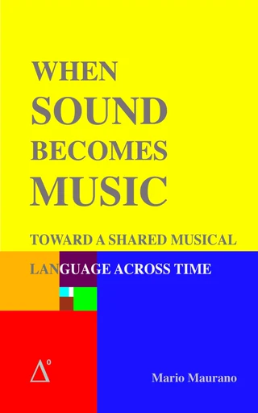

De raadgever, en de klas.
Twee dingen in één. Terwijl je schrijft, kijkt de Coach over je schouder mee en waarschuwt hij je: de maat die niet sluit, de sprong die onopgelost blijft, de noot die dat instrument niet heeft. En wanneer je wilt leren, neemt hij de leiding: een volledig compositieniveau, van één melodie tot een vierstemmig stuk. Hij waarschuwt, hij blokkeert nooit — en hij zegt geen woord tot je hem aanzet.
Het oor 🎓 · aan- en uitzetten
Naast de naam van de app, in de Score en in het Keyboard, woont een discrete 🎓. Wakker pulseert hij zacht in violet: de Coach luistert. Eén klik laat hem slapen of wekt hem, en de toestand is gedeeld: wat je in de Score uitzet, blijft uit in het Keyboard. Met het oor in slaap zegt de Coach niets — wanneer je gezelschap wilt, beslis jij. Met een rechtsklik kies je wie je gezelschap houdt — vandaag de Suite Coach — en ook de taal ES/EN van de hele suite.
Het berichtje verdwijnt niet: het wacht op je
Wanneer de Coach iets te zeggen heeft, verschijnt er een klein paneel waar je aan het werk bent, en het blijft staan: niemand hoeft zich te haasten met lezen. Je sleept het aan de kop, het onthoudt waar je het liet, heeft A− en A+ voor de lettergrootte en sluit met de ✕, met een klik erbuiten of met de 🎓. De toets ? opent het, sluit het en opent opnieuw wat hij het laatst zei. Bij de berichten van het traject blijft het vastgezet en worden nieuwe berichten eronder gestapeld in plaats van overschreven. En de 🎓 in het bericht zelf stuurt dat onderwerp naar het venster van de Coach, waar de volledige miniles opengaat.
De tekens ? · de uitleg waar de regelaar staat
Sommige regelaars van de Score hebben een blauwgroen ? ernaast. Eén klik en de Coach legt die regelaar uit in één zin, met een more ⟶ dat de pagina op de site opent waar het uitgebreid wordt verteld. Vandaag zijn het er vier, de meest nodige: het notengebaar, het boogebaar, en de Touch (aanslag) en de State (toestand) die een expressiewoord van het instrument vraagt. Er komen er nog veel meer. In de app van de Coach gaat het ? rechtstreeks: op die pagina wordt niets bewerkt — er wordt gelezen —, dus opent het ? van elk blok de sectie van deze pagina die het vertelt, zonder venster ertussen.
Eerste raad: de maat klopt altijd
Als je eerste noot op tel 3 valt, verdwijnen tel 1 en 2 niet: de Score vult ze met rusten en zegt het je meteen, met één enkele undo om het terug te draaien. Hetzelfde voor een leemte die je binnen de maat vóór een noot laat. En als de waarde die je koos niet past in wat overblijft, kort de Coach ze niet in: hij zegt je dat je ze moet overbinden met de volgende noot, zoals een muzikant doet, in plaats van een gepunteerde waarde over de maatstreep te laten lopen. Vanuit het bericht opent de 🎓 de miniles: de maat als een doos met tellen, de tweelingrust van elke waarde, en hoe je rusten telt om op tijd in te zetten.
Buiten de omvang, en wie het beter past
De Coach kent de omvang van elk instrument. Schrijf je een noot die dat instrument niet heeft, dan zegt hij het meteen; en bij het openen van een bestand loopt hij het stuk door en waarschuwt hij één keer per geval, zonder zich te herhalen. Hij gaat nog een stap verder: valt de noot in een zwakke zone van het instrument — waar ze klinkt maar niet spreekt —, dan stelt hij voor welk ander instrument ze beter zou zeggen.
De melodische regels · wat het oor verwacht
Vier waarschuwingen, allemaal geformuleerd zoals een leraar het zou zeggen, niet zoals een spellingcontrole. De tritonus: de moeilijkste sprong om zuiver te zingen, met de suggestie om er stapsgewijs naartoe te gaan. De septiem: zonder referentie haast niet te zingen. Herstel na de sprong: na een sext of meer verwacht het oor een terugkeer met een stap in de tegengestelde richting. En de tonica: een frase begint beter thuis en sluit door thuis te komen — de slotwaarschuwing wacht tot de laatste noot de laatste maat vervolledigt, niet louter tot ze de laatste is die je schreef. De drempel ligt bewust boven de kwint: de modelmelodie zelf opent met een kwintsprong en herstelt die nooit. En ze gelden niet voor de bas: een bas springt octaven van beroep.
Contrapunt · zodra er twee stemmen zijn
Zodra je een tweede stem schrijft, let de Coach op wat er tussen de stemmen gebeurt: parallelle kwinten en octaven, waarbij de twee stemmen tot één versmelten; verdekte beweging naar een kwint of een octaaf, die de consonant blootlegt; en stemkruising, wanneer de onderstem boven de bovenstem uitkomt. Het zijn de regels waarmee vierstemmig schrijven vierhonderd jaar lang werd onderwezen, in één zin gezegd en zonder Latijn.
Ze waarschuwen, ze blokkeren niet · en het stuk beslist waarop gelet wordt
Geen enkele regel houdt je tegen om wat dan ook te schrijven: als je oor iets anders verkiest, beslis jij. En op welke regels gelet wordt, is geen beslissing van het programma: het is die van het bestand — elk stuk of elke oefening draagt de lijst van regels in zich, met hun ernst en de kanalen waarop ze van toepassing zijn. Een oefening van Niveau 1 let op het contrapunt; een eigen stuk hoeft nergens op te letten. Het enige wat het schrijven echt tegenhoudt, is het slot op de modelstem van een les, en zelfs dat kan bewust worden geopend.
R·K en 3·2 · twee verslagen die je zelf vraagt
Twee knoppen van de Score die nooit uit zichzelf spreken: je roept ze op wanneer je iets wilt weten. R·K leest elke stem en zegt in welke zone van haar instrument het grootste deel van de muziek ligt, met het karakter dat Rimski-Korsakov aan die zone gaf — het is het oordeel of de lijn geschreven is waar dat instrument spreekt. 3·2 is de gevoelde maatsoort: het meet waar de bas valt, telt het stuk in 2+2+2 en in 3+3, en zegt je of wat klinkt de geschreven maatsoort tegenspreekt, of dat twee kanalen een sesquialtera spelen die niemand heeft geschreven.
Het venster van de Coach · vier tabbladen
Het venster gaat open met de knop ⊞ coach in de Score of het Keyboard, en ook vanzelf, vanuit de 🎓 in een bericht, die het onderwerp meeneemt om het volledig te openen. Het onthoudt op welk tabblad je het liet. Naast het tabblad COACH staat de taalbalk van de hele suite (ES · EN · FR · NL · DE): wat je daar kiest, geldt voor alle zes de apps, en in het Frans, Nederlands of Duits openen de ?-knoppen de handleiding in die taal.
🎓 Coach · de lange versie van wat hij je zei
Hetzelfde als het berichtje, zonder haast verteld: de begroeting, de huidige waarschuwing en, als het onderwerp het verdient, de volledige miniles. De maat die zichzelf vult, opent de les over de maat; het verslag over de omvang opent die over de omvang van de instrumenten, met het verhaal van de dubbele hoorn in F en Bes uit 1897 — de reden waarom een omvang geen gril is.
🎻 Orchestration · de instrumentenkist van de suite
Alle instrumenten, per groep — houtblazers, koperblazers, slagwerk, harp en toetsinstrumenten, strijkers, stem, synths —, elk met zijn omvang, zijn register en een balk die toont waar het kracht heeft. Een klik opent zijn fiche: de vier zones van Rimski-Korsakov met het karakter en de dynamiek van elke zone, en — waar het bestaat — hoe het genoteerd wordt en hoe het bespeeld wordt, met vermelding van de bron. Het is dezelfde kist die de Score, het Keyboard en het Register gebruiken: één bron voor de hele suite.
📖 Classroom · de niveaukaart en de minilessen
De niveaukaart — wat je gaat doen en met welke tools — en de knop om je les voort te zetten, die je bestand in de Score opent, het klaarzet en wacht tot het echt geladen is voordat hij je opnieuw verwelkomt. Vandaag is er één miniles geschreven, die over de maat; aangekondigd zijn de drie volgende: de omvang van de instrumenten, de puls en de basis-solfège.
🧭 Progress · het traject, gelezen uit je eigen bestand
„Het traject van je naam”: het bestand, het niveau, in welke etappe je zit, de zes etappes met hun markering — klaar, huidig, nog te doen, vergrendeld —, de voortgangsbalk, de verzamelde prijzen, de werksuggestie voor de huidige etappe en het logboek van het traject. Niets hiervan wordt in het programma bewaard: het wordt gelezen uit het .mmf-bestand. Neem het bestand mee naar een andere computer en het traject gaat mee.
Het compositiespel · Niveau 1
Eén bestand dat groeit. Je verandert nooit van document: hetzelfde werk wordt etappe na etappe breder, en aan het einde is het bestand het portret van je traject. De regels waarschuwen je; ze blokkeren je nooit — je kunt altijd schrijven wat je wilt.
De melodieën · sectie A
De modelmelodie blijft bovenaan vaststaan en jij schrijft er zeven van jezelf op dezelfde ritmische mal. De Coach waarschuwt je als een sprong onopgelost blijft of als de frase niet thuiskomt.
Sectie B
Het werk groeit met het model van B, tekst inbegrepen, en jij breidt je zeven melodieën uit. B blijft bewust open: het is een lange vraag.
Deel C + cadenza
Reprise en cadenza. Hiermee sluit het stuk: A · B · C.
De duo's
Je schrijft de bas onder elke melodie, in F-sleutel: de stem die de harmonie draagt. Hier komen de regels van het contrapunt erbij — parallelle kwinten en octaven, stemkruisingen. En bij het ontstaan van elk duo stelt de Coach een idee voor: een kwint, een canon, een omkering, een spiegel.
De trio's
De tweede stem vervolledigt het akkoord binnen het kader dat de melodie en de bas al hebben vastgelegd.
De kwartetten
De tenor komt erbij in F-sleutel en de bas zakt een octaaf: elk blok wordt vierstemmig.
Wanneer een etappe af is
Niets te melden en geen knop om in te drukken: een etappe sluit wanneer de laatste maat van elke stem vol is — met noten of met rusten, een akkoord telt één keer —, over de zeven melodieën van de eerste drie etappes, de acht bassen van de duo's, de tweede stem van de trio's en de tenor van de kwartetten. Zolang er nog ontbreken, zegt de Coach je welke af zijn en welke niet, één keer per voltooide stem.
En dan groeit het bestand vanzelf
Is de etappe gesloten, dan wordt het stuk breder zonder dat je iets doet: de nieuwe maten komen erbij, de noten en de tekst van het model en het label van het deel, en de schikking past zich aan wat volgt — de zoom, het klavier in schrijfmodus, de band open en de cursor in de eerste stem die nog ontbreekt. Je schrijft verder waar je gebleven was.
Het slot op de modelstem
De modelmelodie is verzegeld: probeer je eroverheen te schrijven, dan legt de Coach uit waarom hij het niet toelaat, in plaats van je te laten raden. Ook de referentiestemmen van elk blok worden verzegeld naarmate je ze als basis gebruikt, en die kunnen bewust worden geopend: als je dat doet, zegt de Coach je welke prijs je gaat betalen — dat de stemmen die je erboven schreef, bedacht zijn tegen de vorige versie.
De ideeën die hij voorstelt · met je eigen noten
Bij het ontstaan van elk duo stelt de Coach er een van vier voor: imitatie op de kwint, canon, omkering of spiegel — de kreeftgang —, één per duo, in de volgorde waarin je ze opent. En hij legt het niet abstract uit: hij vertelt het aan de hand van je eigen eerste vier noten, benoemd in do-re-mi. Het is een voorstel, geen huiswerk: het wordt nergens bijgehouden.
De ster, en de sterren die zich opstapelen
Elke afgesloten etappe levert een witte ☆ op; alle zes, een gouden ★; elke vijf gouden, een lauwerkrans. De gouden ster is geen versiering: ze wordt in het bestand bewaard met je naam, de oefening en de datum, ze stapelt zich op over oefeningen heen, en ze wordt ook aan je auteursnaam toegevoegd — zo staat ze ondertekend in elke kopie van het stuk die je eruit haalt.
Het logboek reist mee in het stuk
Elke mijlpaal van het traject wordt met zijn datum vastgelegd in het .mmf-bestand, niet in het programma: de etappe die je afsloot, de prijs, het slot dat je opende. Bewaar als, neem het bestand mee, en het traject zit erin. Je naam schrijf je één keer en elke oefening die je later opent, neemt hem over.
Je melodie is er één op biljoenen
De mal van sectie A heeft veertien vakjes. Met de acht trappen van het octaaf geeft dat 8¹⁴ mogelijke melodieën — meer dan vier biljoen — en het hele stuk levert een getal van achtendertig cijfers op, van de orde van de atomen van de hele mensheid samen. De Coach heeft het niet ergens opgeschreven: hij berekent het uit je eigen bestand en zegt het bij het openen van het niveau. Met een rechtsklik op de titel van het stuk lees je het opnieuw wanneer je wilt. Elke keuze die je maakt, is een daad van identiteit.
Wat er komt
De puls · vandaag een metronoom, morgen een ritmische Coach
In het Keyboard is er een puls die je kunt zien en horen: hij start en stopt, hij heeft zijn licht, zijn Italiaanse term — Largo tot Presto —, de klik met zijn volume en zijn toonhoogte, en tap, dat het tempo uit je eigen tikken haalt. Hij kan meekloppen met het tempo van het stuk dat in de Score openstaat, en dan heeft het stuk de leiding. Wat hij nog niet doet, is naar jou luisteren: vergelijken wat je speelt met de puls en je zeggen waar je voorliep. Dat is de kiem van de ritmische Coach, en dat is wat er nu komt.
Andere coaches · Salieri wacht op zijn beurt
De Suite Coach is geduldig en begeleidt wie geen muziek kent. Maar het karakter van wie je gezelschap houdt, is een gegeven, niet het programma: dezelfde waarschuwing kan met een andere stem worden gezegd. Salieri is al van begin tot einde geschreven — begroeting, waarschuwingen, melodische regels en contrapunt, alles met zijn eigen temperament — en staat bewust uit, wachtend op zijn beurt in het menu.
Voor leraren: de cursus, of je eigen
Er zijn twee manieren om de klas te gebruiken. De eerste is de cursus volgen: de leerling opent Les 0 vanuit de Classroom met zijn naam, en vanaf dan is zijn bestand zijn schrift — het niveau, de etappe, het logboek en de beloningen reizen allemaal mee in het .mmf-bestand, niet op een server van ons. Om te zien hoe het gaat, vraag je het bestand en open je het.
De tweede is je eigen oefeningen schrijven, en daarvoor is het programma eigenlijk bedoeld in een les harmonie, contrapunt of compositie. Je bouwt de oefening in de Score zoals elke andere partituur: het model in één kanaal — een becijferde bas, een cantus firmus, een melodie om te harmoniseren — en lege kanalen waar de leerling zal schrijven. Je bewaart met SAVE en deelt dat .mmf-bestand uit: per e-mail, of op de eigen pagina van de school. Elke leerling opent het via MENU FILES, werkt erop verder en bewaart zijn eigen kopie; die van jou wordt nooit aangeraakt.
Het bestand is klein — een oefening van zestien maten is enkele kilobytes —, dus er valt niets te comprimeren; een zip dient om een hele verzameling uit te delen. En het loont om het al met een titel uit te delen: Score Info bevat titel, ondertitel, auteur en copyright, die allemaal in het bestand meereizen en onderaan de pagina worden afgedrukt.
Wat de leerling wint, is niet nog een editor: het is zichzelf zuiver horen. Kwinten, tertsen en leidtonen klinken waar ze horen, en een fout in de stemvoering hoor je al voordat iemand ze met rood potlood aanduidt.
De volgende niveaus
Vandaag is er één niveau, Niveau 1, en het is volledig. Wat al gebouwd is en niet van het niveau afhangt, is de hele klas: etappes die zichzelf controleren, het bestand dat groeit, het slot, de prijzen, het logboek, de rekensom van het spel. Daarop worden de volgende niveaus gebouwd.
Het boek

When Sound Becomes Music · Cuando el sonido se vuelve música
Toward a Shared Musical Language Across Time, van Mario Maurano. Het waarom achter de suite: de geometrie van de klank, de pythagorese intervallen en de oude melodieën — van het octaaf, de kwint en de kwart tot het grafschrift van Seikilos —, waar theorie ervaring wordt.
Met een begeleidende website met interactieve tools: een intervalcalculator, frequentietabellen en oefeningen om te downloaden.
Het boek (Amazon · EN/ES) → Begeleidende website →